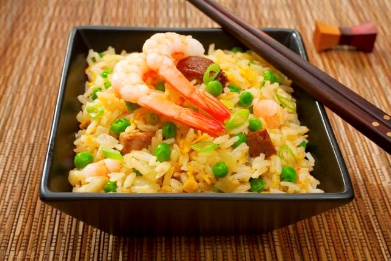
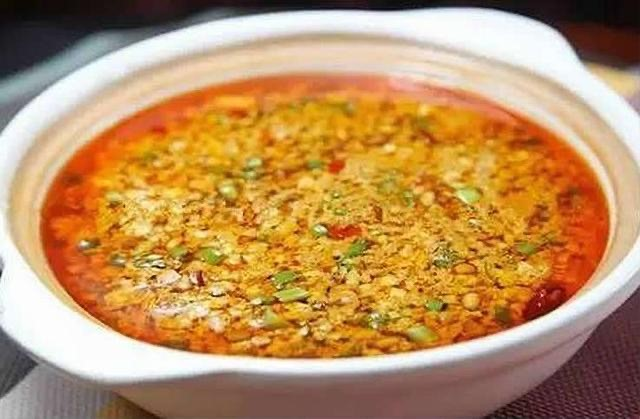
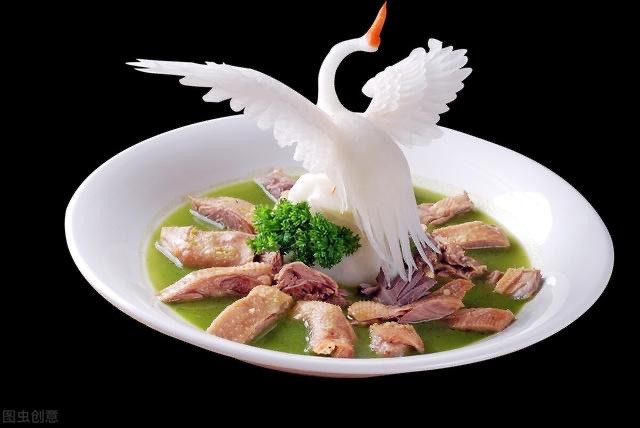
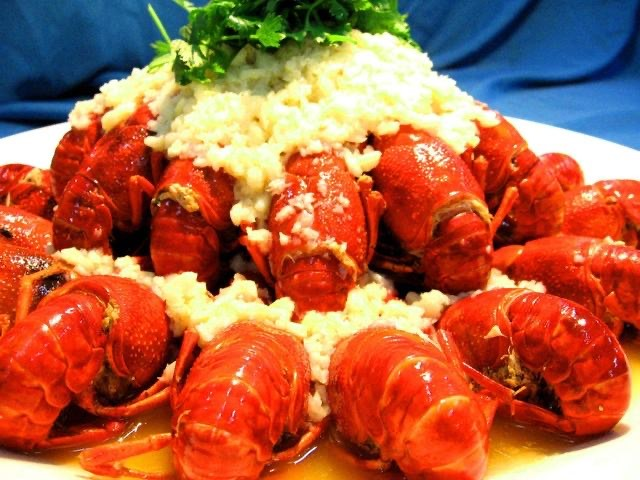

 |
扬州炒饭 扬州炒饭是扬州当地的传统名吃，其起源于隋朝时期，一般主要食材为米饭、火腿、鸡蛋、虾仁等，发展到现在风味各异，品种繁多，深受人们喜爱。 明代，扬州民间厨师在炒饭中增加配料，形成了扬州炒饭的雏型。清嘉庆年间，扬州太守伊秉绶开始在葱油蛋炒饭的基础上，加入虾仁、瘦肉丁、火腿等，逐渐演变成多品种的什锦蛋炒饭，其味道更加鲜美。随后，通过赴海外经商谋生的华人，特别是扬州厨师，把扬州炒饭传遍世界各地。 扬州炒饭选料严谨、制作精细、加工讲究，而且注重配色。炒制完成后，颗粒分明、粒粒松散、软硬有度、 色彩调和、光泽饱满、配料多样、鲜嫩滑爽、香糯可口。 |
|  | 嘶马拉豆腐 嘶马拉豆腐是江苏省扬州市的一道传统名菜，属于淮扬菜；上桌的拉豆腐，下面是洁白如玉的豆腐，上面是一层色若琥珀的素油，油上又点缀其他物，有竹笋的黄、香菇的褐、菠菜的绿。入口后，豆腐的高爽中，有香菇的油腻、竹笋的清脆、菠菜的酸鲜、蒜叶的香醇，如同脂羹般，美不胜收。 嘶马拉豆腐的主料是晶莹细嫩的豆腐。配料是菠菜、香菇、竹笋、蒜叶等。调料有素油、麻油、白糖、酱油、姜末、胡椒粉、味精、盐等。制作此菜的关键是勾芡、加油和下佐料，前后三次勾芡，每次勾芡前所下的佐料都不同，勾茨要求又各有别。 |
|  | 扬州盐水鹅 扬州盐水鹅，江苏扬州特色名菜，形态饱满，烂而不散，色黄油亮，质感松嫩、肥而不腻，鲜咸. 鹅扬州人俗称其为“老鹅”，距今有着2000多年历史，是淮扬菜里不可或缺的一道名菜。充分体现了“以味为核心，以养为目的”的中国烹饪的本质特征。在扬州，卖老鹅的摊点，大街小巷，遍地开花。扬州人吃老鹅，跟家常便饭一样。只要高兴，只要想吃，家里来客，走上街头，随处可见老鹅摊，鹅前胛、鹅后腿、鹅头颈、鹅爪翅、鹅血肠、鹅肫肝等，货随主便，任意挑选，称好、剁好、装好、浇卤等，一手交钱，一手拎袋老鹅，与三五知己，推杯换盏，佐酒或是搭饭，既方便又惬意。 扬州是名副其实的鹅消费城市。全国最优良的鹅品种为“扬州鹅”。据统计，扬州人一年消费盐水鹅2000万只，扬州风鹅产业用鹅在6000万只，所以北方各地饲养的鹅都到扬州来销售。再说在扬州正式的酒席上，缺不了扬州盐水鹅。扬州盐水鹅的名气大得很，几乎与瘦西湖齐名，到扬州没逛过瘦西湖，没吃过扬州盐水鹅，那你不能算是到过扬州。 |
|  | 邵伯龙虾 邵伯龙虾坐落于扬州市下辖江都区邵伯镇美食街，在这里专门经营邵伯龙虾的菜馆有数十家，每天中午以后，这里车水马龙，数以百计的车辆堵塞了街道，这些车主都的从全国各地、不远千里特地赶来的，他们的目的只有一个——吃邵伯龙虾。 之前，邵伯龙虾的主料小龙虾都产自邵伯湖，可是随着邵伯龙虾的声名鹊起，邵伯湖里的龙虾早已不堪重负，所以，现在顾客们嘴里的龙虾都是从邵伯周边的龙虾养殖场运来的（邵伯湖位于运河西侧，湖区面积14.7万亩，湖水清澈，水草丰美，盛产龙虾。邵伯湖龙虾从外型看，壳是青中带红，肚皮发白，个头大而饱满，不仅干净卫生，味道又是那儿鲜美，与内河沟塘龙虾大不相同）。不过，没有关系，这对邵伯龙虾的口感并没有什么影响。 从制作工艺看，也有与众不同的烹调手法。邵伯龙虾大概分五种口味。分别是：红烧，清水，椒盐，蒜蓉与腐乳。顾客可根据个人口味不同进行选择。邵伯美食街有不少生意火爆的龙虾馆。龙虾不仅干净卫生，而且味道鲜美。
|